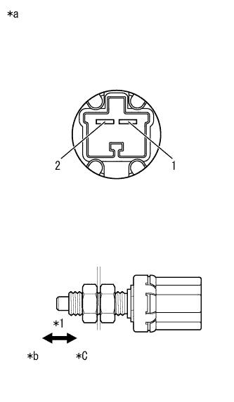

DTC P0724/95 STP Lamp SW on failure |
| DTC No. SAE/TCCS | DTC detection conditions
| Inspection site |
|---|---|---|
| P0724/95 |
|
|
| Step 1 | Tascan data reading (stop lamp SW) |
Connect SST (Tascan) to DLC3.
Follow the SST (Tascan) screen display, and select [ECU Data Monitor]-[Stop Lamp SW].
Read [OFF → ON] during the brake pedal operation displayed in SST (Tascan).
| Inspection condition | standard |
|---|---|
| Brake pedal release → Step | OFF → ON |
| result | Destination |
|---|---|
| Abnormality | A |
| normal | B |
|
| ||||
| A | |
| Step 2 | Stop lamp switch ASSY inspection (stop lamp switch ASSY mounting status) |
Inspect the installation status of the stop lamp switch assembly.
|
| ||||
| OK | |
| Step 3 | Stop lamp switch assembly inspection |
|  |
Stop lamp switch The connector A26 of ASSY is separated.
Use SST (Toyota Electrical Tester) to measure resistance between terminals.
| Inspection terminal | Inspection condition | Reference value |
|---|---|---|
| 1-2 | Do not push the shaft (Step on the brake pedal) | Less than 1 Ω |
| 1-2 | Push in the shaft (Do not step on the brake pedal) | 10 kΩ or higher |
| *1 | Brake pedal |
| *a | Connector non -connection status (Stop lamp switch ASSY) |
| *b | Step on |
| *c | Leave |
|
| ||||
| OK | |
| Step 4 | Wire harness and connector inspection (engine control computer -stop lamp switch ASSY) |
reference.Cut the connector D54 of the engine control computer.
Stop lamp switch The connector A26 of ASSY is separated.
Use SST (Toyota Electrical Tester) to measure resistance between terminals.(The terminal array isreference)
| Inspection terminal | Inspection condition | Reference value |
|---|---|---|
| D54-19 (STP) --A26-1 | Always | Less than 1 Ω |
| Inspection terminal | Inspection condition | Reference value |
|---|---|---|
| D54-19 (STP) and A26-1-Bodies between other terminals and body earth | Always | 10 kΩ or higher |
|
| ||||
| OK | ||
| ||